How to integrate Gitlab with Slack
Merge request 발생 시 Slack Notification 처리 방법
Slack 설정
Notification을 받기 위한 channel을 생성한다.
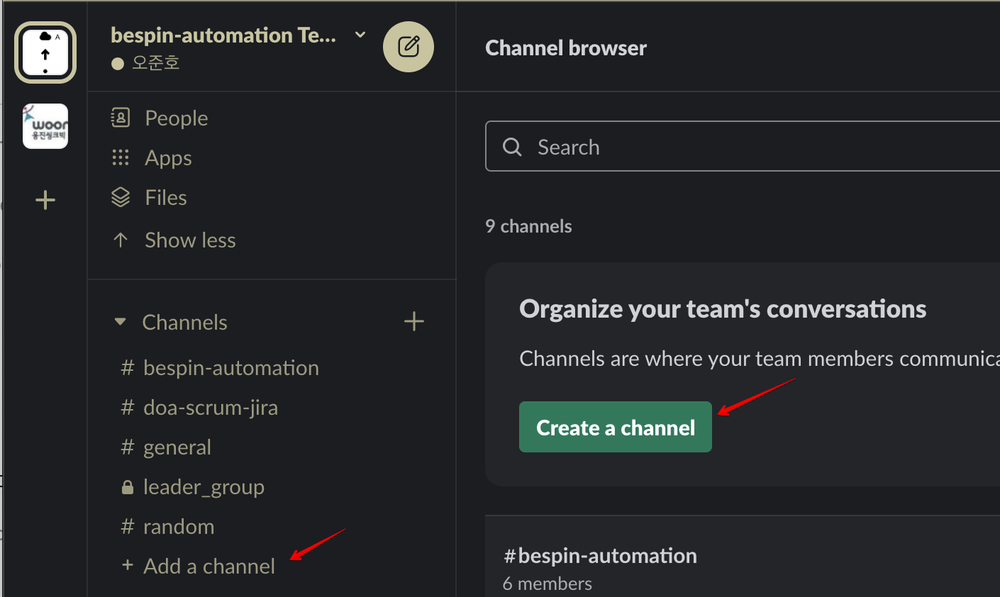
채널명을 입력한다.
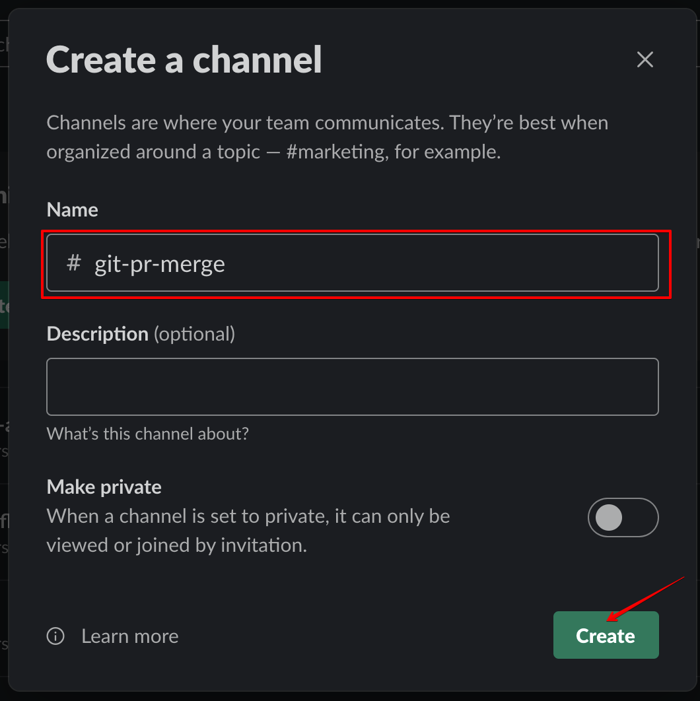
Notification을 받을 구성원 추가한다.
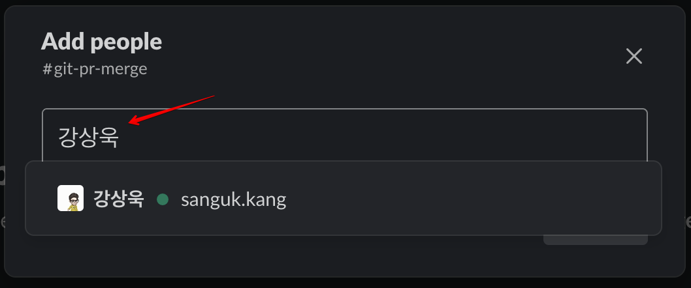
채널 생성 결과 화면
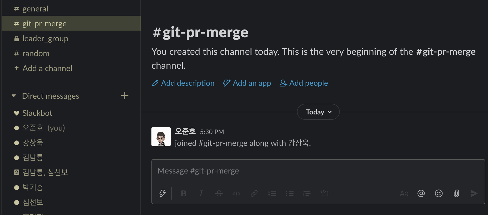
Add an App 또는 slack 우측 페이지의 Details에서 More > Add apps를 클릭한다.
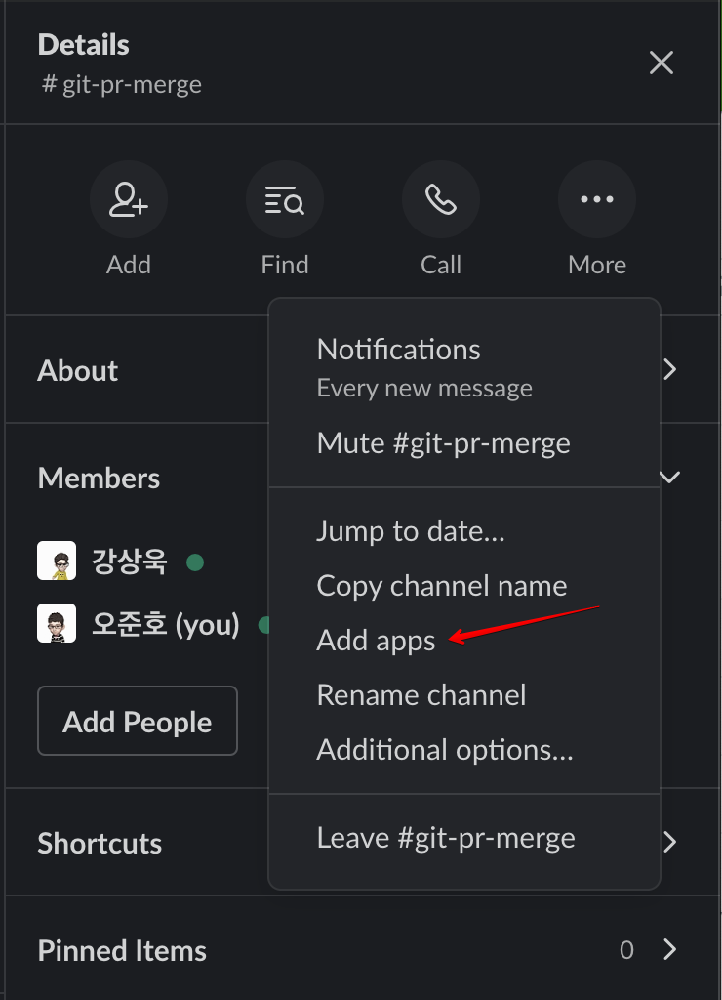
Incoming WebHooks 앱을 설치한다.
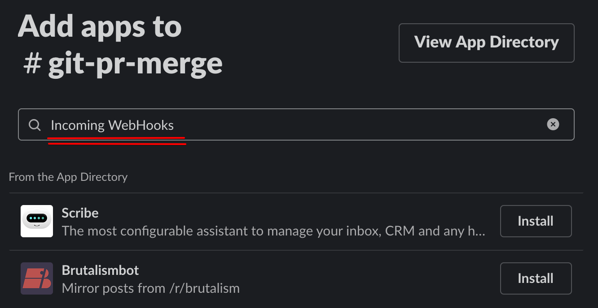
브라우저에서 slack 설정
팝업이 나타나면...
Add to slack을 클릭한다.
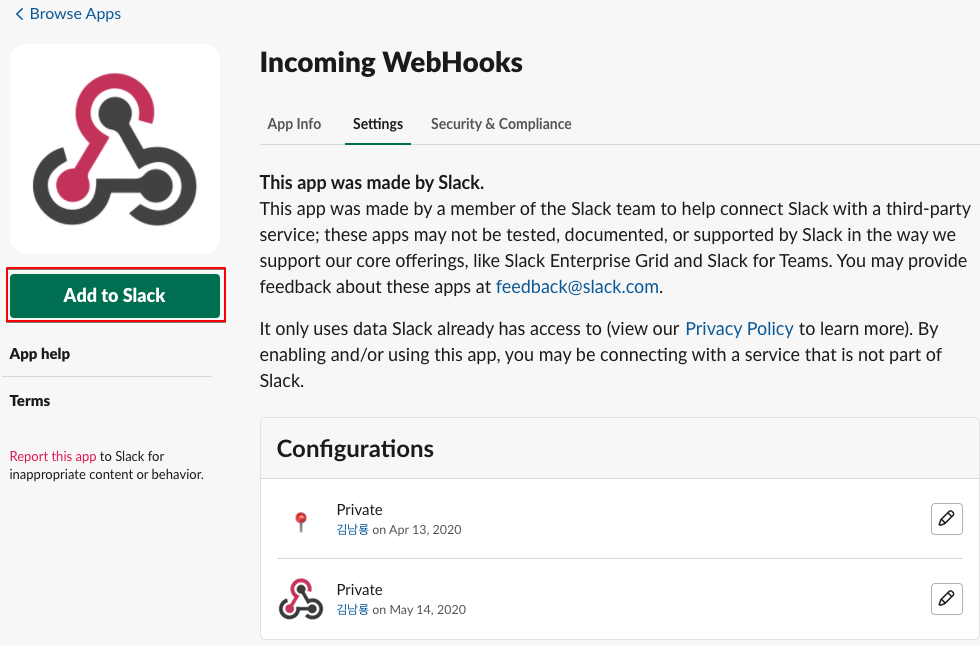
받을 채널 정보를 입력하고 하단 버튼을 클릭한다.
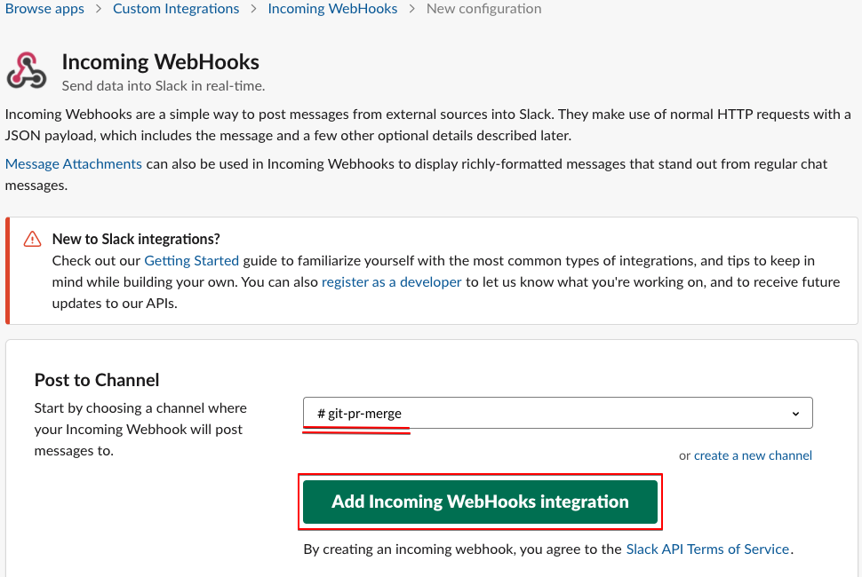
Webhook URL이 생성된 결과 화면이 나타난다.
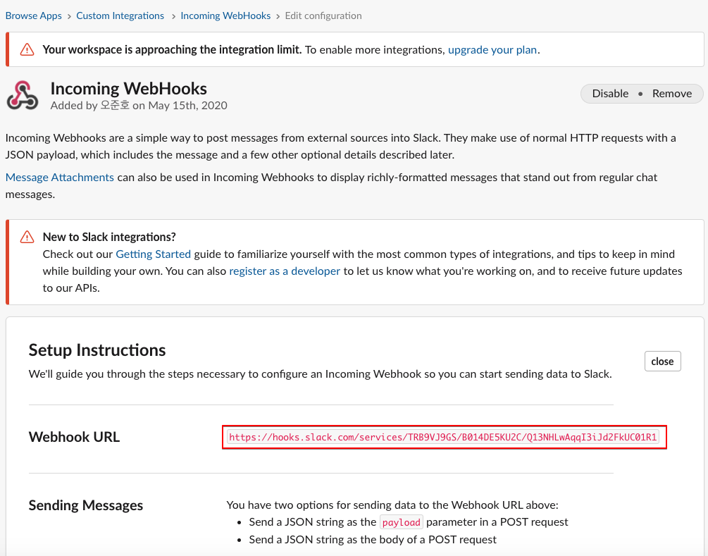
위 화면 아래 쪽을 보면 Copy를 진행할 수 있도록 정리되어 있다.
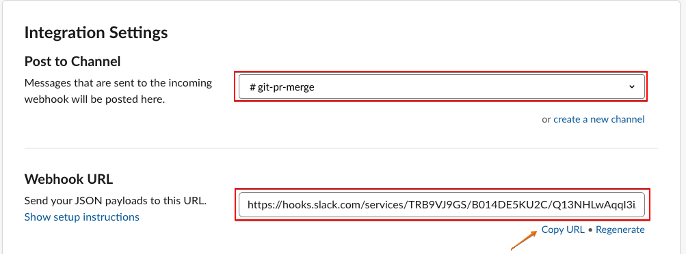
Gitlab 설정
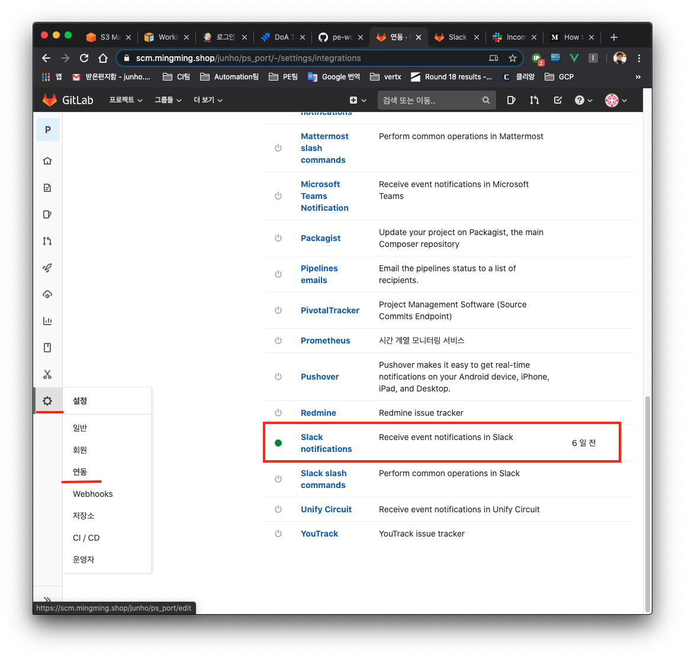
Active를 체크하고 Merge request 를 체크한다.(필요 시 다중 체크 가능)
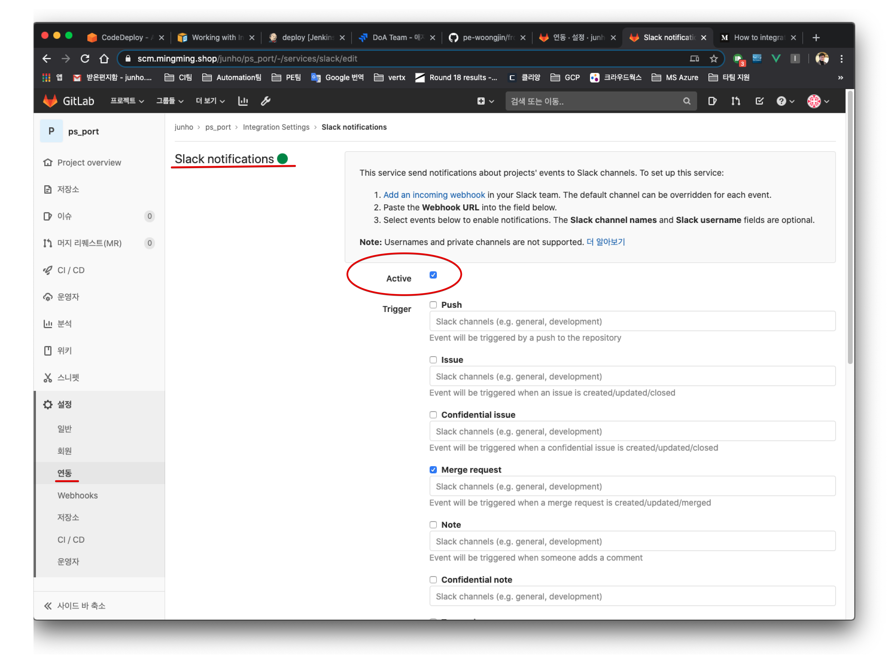
아래로 이동하여 Webhook 항목에 slack에서 만들어진 "Webhook URL"을 입력하고 하단 버튼을 클릭하여 설정을 마친다.
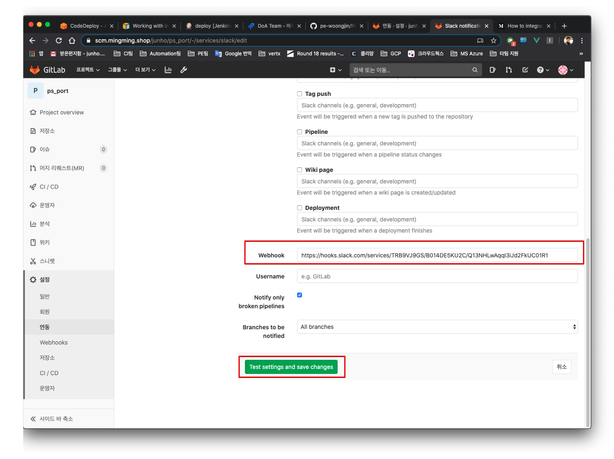